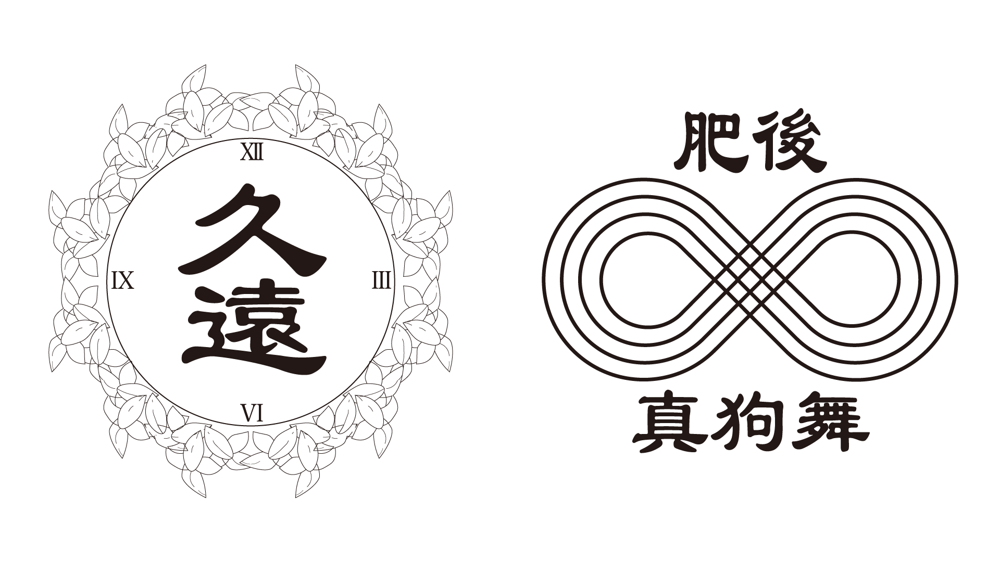

CS
Souma Chijiiwa
Based in Fukuoka
works/Higomaguma
logo design 20205
高校の友達からの依頼で、熊本のよさこい「肥後真狗舞」の2024年のパーカーのフロントロゴ（右）とバックロゴのデザイン(左)を担当しました。 バックロゴ（左）のデザインは肥後真狗舞の2024年の代のテーマが「久遠（クオン）」ということで、意味としては『時間的に非常に長いこと、または永遠という意味を持つ言葉。』依頼主からの要望で、久遠の意味に永遠の意味があるので時計と沈丁花（ジンチョウゲ）の花言葉が永遠を意味する花でその二つを組み込んだデザインを制作して欲しいと言われました。フロントロゴ(右)のデザインは、依頼主からの要望である程度のデザイン画をもらい、そこから自分なりにアレンジを加えたデザインを制作しました。
 Back To Works